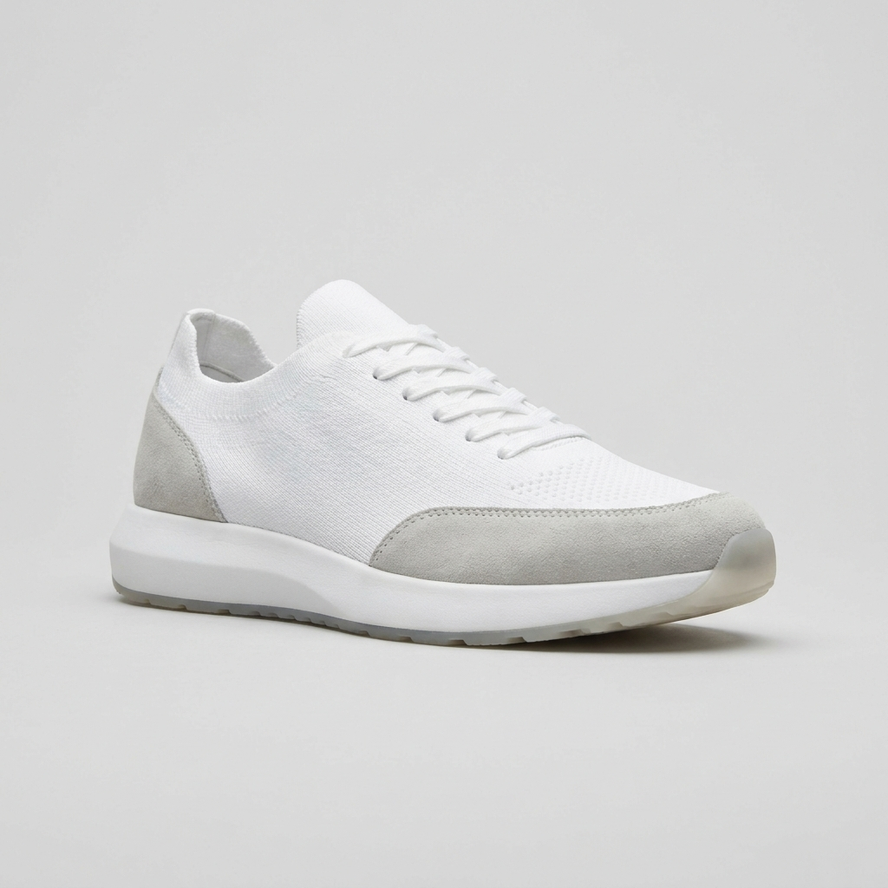
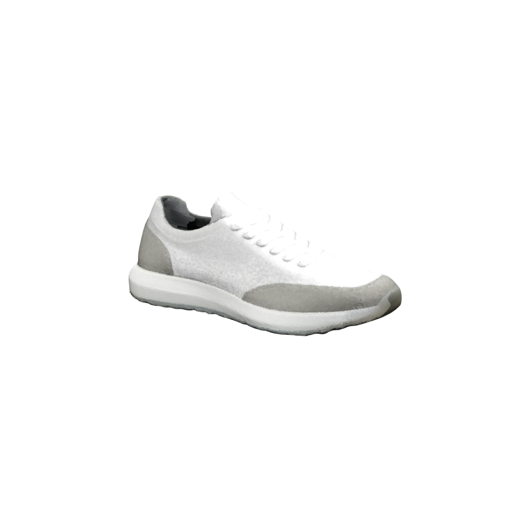
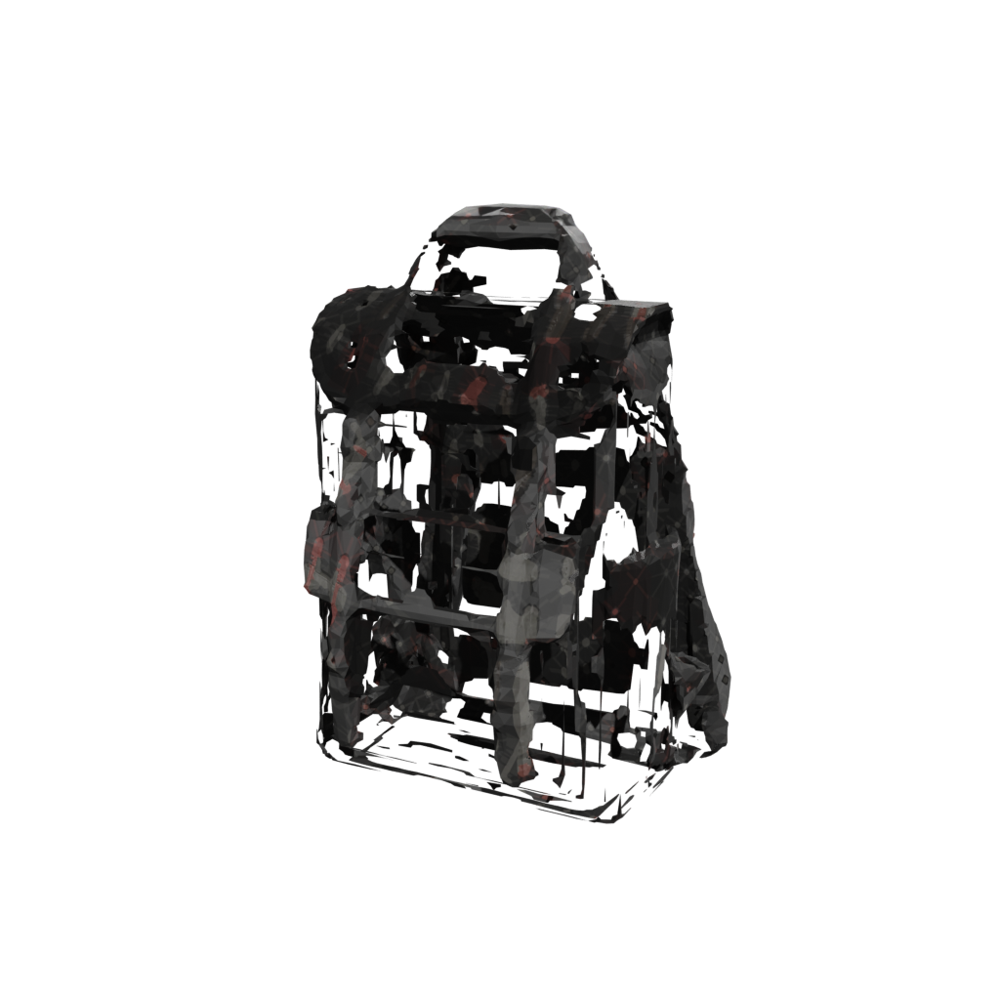
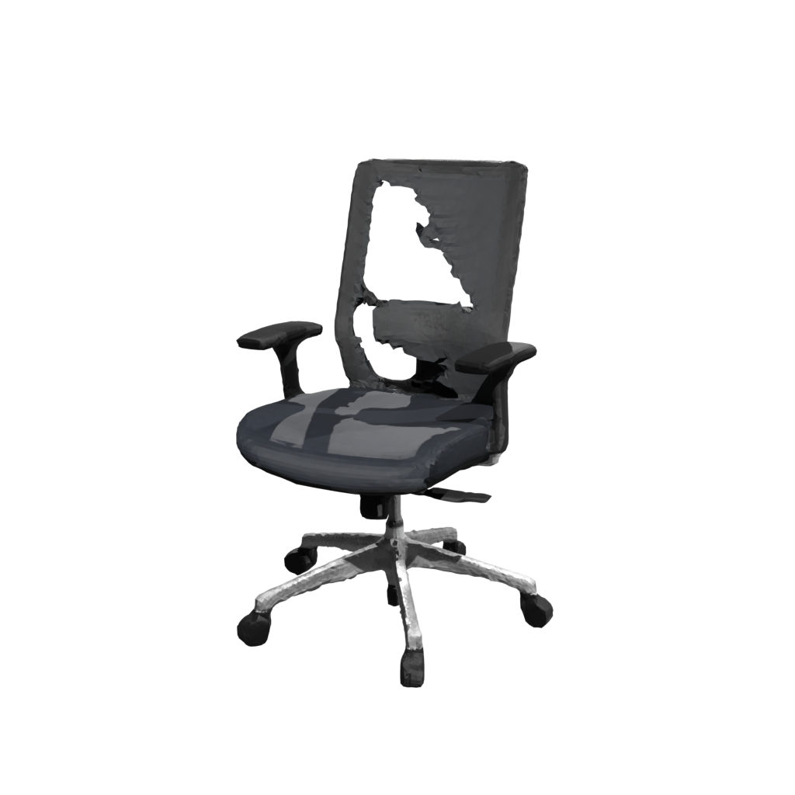
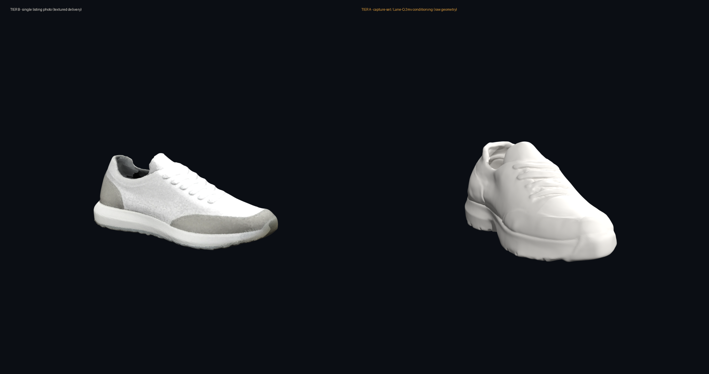

Case study · E-commerce 3D
One product photo → a marketplace-ready 3D model and a compliance report
A single listing photo goes in. A spec-checked Amazon/Shopify 3D asset comes out — with a machine-generated report proving it meets the marketplace's published rules, before you ever see the file.
The problem
Amazon and Shopify both let sellers put a rotatable, AR-placeable 3D model on a product page — and both publish a strict spec for it: a triangle-count ceiling, allowed texture sizes, a required PBR material set, a file-size cap, and real-world scale so the AR view is life-size. Miss any one and the asset is rejected or, worse, silently renders wrong on a customer's phone.
The usual options are both bad. A 3D agency is slow and priced per-asset for a hand-modelled result. A $20/mo "photo to 3D" web tool is fast but hands you a raw mesh with no guarantee it meets any marketplace spec — wrong scale, oversized textures, a broken material set — and no way to know until the upload bounces. For a catalogue of dozens or hundreds of SKUs, neither scales.
The model isn't the deliverable. The proof it will pass is the deliverable — and that's the part nothing on the market ships.
The run: one photo → a passing SKU
Here is the pipeline end-to-end on a real SKU — a knit runner sneaker, Tier B intake (one existing listing photo, the honest common case). Nothing was hand-modelled.
1 — The input
A single product photo. Neutral light, no baked-in key or hard shadow — the same shot you'd already have for a listing.

SNK-102 / knit runner2 — The generated, textured model
The photo drives a generation model, then an automated mesh-ops chain: retopology to a clean triangle budget, UV unwrap, a PBR texture bake, real-world rescale to the listed dimensions, and a KTX2-compressed GLB export. Below is a render of the actual delivered asset — color-true, under a neutral view transform (not the grey-clay preview an early pipeline would show).

3 — The compliance report
Every SKU ships with this. Each line is checked mechanically against the marketplace's published specification — not eyeballed. This is the sneaker's actual report, both marketplaces, verbatim:
| Amazon 3D requirement | Result | Shopify 3D requirement | Result |
|---|---|---|---|
| tris ≤ 200k | ✓ PASS | tris ≤ 100k | ✓ PASS |
| texture 2048–4096px | ✓ PASS | texture ≤ 2048px | ✓ PASS |
| PBR metal-rough present | ✓ PASS | full PBR set | ✓ PASS |
| bounding box = listed ±2% | ✓ PASS | GLB ≤ 4 MB | ✓ PASS |
| real-world scale | ✓ PASS |
Verdict: PASS — both marketplaces.
Beyond the pass/fail grid: a per-axis dimension check against the listed size, a full texture & PBR inventory (channels present, max texture dimension, map count and sizes), and the final GLB size. For SNK-102: PBR channels basecolor / metallic-roughness / normal / occlusion, four 2048×2048 maps, 1.214 MB against the 4 MB cap.
4 — What's delivered
The compressed marketplace GLB per target (Amazon-3D and/or Shopify-3D profiles), a USDZ for Apple/AR Quick Look on request, and the compliance report itself — the artifact that says why this asset is safe to upload.
The sneaker wasn't cherry-picked. The same run put four more real products through: over-ear headphones, a brass table lamp, a mesh office chair, and a waxed-canvas backpack. Every delivered Shopify GLB measured 0.76–1.33 MB against the 4 MB cap; generation ran 63–154 s per SKU on a shared card. Three of the five passed clean. Two did not — and that's the interesting part.
The honest differentiator: the gate is the product
Anyone can show you their best render. The reason a compliance report is worth paying for is what it does on the bad days — the assets it stops. Here are the two SKUs from this run that didn't pass, and the one that upgrades from "good" to "guaranteed."
Exhibit A — refused to ship
The backpack the gate refused to deliver

The waxed-canvas backpack came out of generation with an unusable result: the UV layout collapsed (texture utilization 0.39, below the 0.40 floor), so the texture shredded across the surface, and the model hallucinated depth — 258 mm reconstructed where the listing says 160 mm.
The automated gates caught all of it and marked the SKU FAIL. You never receive this file. It becomes a re-shoot request or a Tier A upgrade — not a broken asset that silently reaches a customer's phone.
Verdict on record: FAIL — UV utilization below floor; bounding-box depth hallucinated (258 mm vs listed 160 mm).
Exhibit B — caught & annotated
The chair's dimension miss, flagged before delivery

The mesh office chair reconstructed visually well — thin legs and five casters recovered, the mesh-weave back present (with a few honest voxel holes visible in the weave). Triangles, textures and the PBR set all passed.
But its bounding box came out 703 mm on the axis the listing puts at 650 mm — outside the ±2% tolerance. Cause: from a single photo the generator can't pin the unseen width, so it guessed. The gate flagged it and the report says exactly which dimension and by how much — a known, annotated miss, not a surprise.
Verdict on record: FAIL (Amazon ±2% bbox) — reconstructed 703 mm vs listed 650 mm. Single-photo width ambiguity, named in the report.
Exhibit C — the upgrade path
Tier A: capture photos pin the geometry a single photo can only guess

Both of the failures above share one root cause: a single photo can't see the dimension it doesn't show. Tier B ships a client-grade textured model today, but on this sneaker the unseen mid-axis was off by +13% — and on the backpack, depth was off by +61%. That error class is exactly what a capture set eliminates.
Tier A takes a short client-shot photo protocol (6–8 angles), builds an orthographic turnaround, and conditions the generator on multiple views. The result (right, above — shown as raw geometry) has visibly crisper laces, pull-tab, and tread, and the listed dimensions hold to 0.0% on every axis. Machine-verified:
| Axis | Listed | Tier B (1 photo) | Tier A (capture set) |
|---|---|---|---|
| length | 300 mm | 300 mm · 0% | 300 mm · 0% |
| height | 110 mm | unseen-axis guess | 110 mm · 0% |
| width | 120 mm | unseen-axis guess | 120 mm · 0% |
Honest limit, stated up front: today Tier A is a geometry-truth premium — it pins the shape, but its dedicated texture pass is still in development, so a Tier A delivery currently pairs pinned geometry with a Tier B texture. When exact dimensions matter more than a hand-tuned finish, it's the right call. When they don't, Tier B ships today. The premium multi-view tier isn't offered for EU / UK / South-Korea-market deliverables (upstream model licence).
Three SKUs passed. One was refused. One was flagged with the exact number. That's not a weakness in the demo — that discrimination is the service. A raw-generation tool would have handed you all five, including the shredded backpack and the wrong-sized chair, with equal confidence and no report. Machine-checked quality is a product, not a promise.
What a delivery contains
Public-safe summary of the delivery profile. Exact scope is quoted per job.
| Item | Amazon-3D profile | Shopify-3D profile |
|---|---|---|
| Geometry | ≤ 200k tris | ≤ 100k tris |
| Textures | 2048–4096px PBR | ≤ 2048px PBR |
| Material set | metal-rough + normal + AO | full PBR set |
| File | KTX2-compressed GLB | GLB ≤ 4 MB |
| Scale | real-world mm, from your listed dimensions (AR-accurate) | |
| Also on request | USDZ (Apple AR Quick Look) · turntable render | |
| Every SKU ships | the compliance report — per-spec pass/fail, dimension check, texture & PBR inventory | |
Most single-photo misses are the unseen axis. A short capture protocol (6–8 angles, even light, a scale reference in frame) removes that entire failure class and unlocks the geometry-truth tier. A one-page capture guide is included with any Tier A engagement.
Have a catalogue to convert?
Send one product photo per SKU. You get back a marketplace-spec 3D model and the report that proves it — or an honest "this one needs a re-shoot" before you spend a cent on a broken asset. Batch-priced; every job scoped and quoted.
Contact for a quote → See the full 3D catalogue The engineering & honest benchmarks
There is no pricing on this page on purpose — scope drives the estimate, and every job is quoted. The stack, the honest benchmarks (failures included), and the open-source licence chain live in the documentation repo.